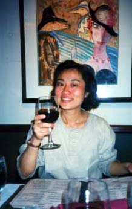
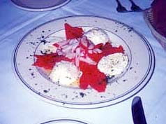

セドナ日記 〜 第３日目 98.5.6
豪華にイタリアン
夕日のあとは、イタリアンの店「Pietros」で豪華なディナーだ。しかも、予約が入っている。予約して、イタリア料理のディナー？多分、日本ではそんなことやったことがない。ちょっと、緊張してしまう。
このお店は、エアポートメサからいくと、89Aを左（つまり西）に曲がり、１マイルくらいいくと左側にSAFEWAY（スーパー）やマクドナルドが見える。その反対側（すなわち進行方向右側）にある。
予約した時間にほんの少しだが早く着いたので、並びのお店に入って見る。「Angels,Art,Crystals」というそのお店は、名前のとおり、「天使と絵とクリスタル」を売ってるお土産やさんだった。セドナの町には多くの、天使、クリスタル関連のお店があるが、ここもそのうちの一つであった。時間が遅いせいか、他にお客がいなかった。ちょっと、怪しげな雰囲気もあるが、もうすっかりセドナに慣れた、僕にとってはどうってことない。実際に入って見ると、ただの土産物屋である。
しかし、やっぱり、クリスタルと天使が並んでいるのである。人によっては、クリスタルからエネルギーが出ているのを感じることができるという。ピラミッドパワーとかのたぐいだと思うが、僕はそれまでそのようなものを感じたことがなかった。セドナでは４つのボルテックスをすべてまわったが、神秘体験もしてないし、なにか普通じゃない感じをうけたこともなかった。もちろん、きれいだなあとか、美しいとおもったことはあったが....。
ところが、その日はお店に置かれているクリスタルの力を直接感じることができたのである。手をかざすと、クリスタルから出てくる、パワーがピリピリ伝わってくる。種類とか大きさで異なる感じも、認識できた。
とても不思議だったが、嬉しくもあった。石？ん？
ただ、この時はあまり時間がなかったので、また出直すことにする。そうそう、豪華なディナーを忘れているではないか！Pietrosは想像通りの、お洒落なイタリア料理のお店だった。
席に通される。天使とクリスタルの店で気分のよくなった僕らは、すっかり調子にのって、ボトルワインを注文する。
食事は、トマトにモッツアレラチーズがのった前菜と、サラダ付きのパスタとメインで一品（何を頼んだか調査中）をたのんだ。店は席がいっぱいになっていて、ざわざわしたところが、なかなか好い感じである。ワインにパンと続いて出てくる。もちろん乾杯。あっというまに酔っ払う。料理が出てくる頃には、さらに調子づいている。食べる。おいしい。パンだけでも美味しいと思ったが、チーズもトマトもハスタもすべて美味しかった。（料理の微妙なレポートができなくてご免なさい。）そう、「おいしい、満足。」これにつきる。
今日行った、ところと、明日の予定を話していた。そう、気付くと、あと１.５日程しか残っていない。つまり、次の日の朝が来れば、その日泊まって次の日は最終日ということだ。いろんな人がグランドキャにオンに行くといいと進めてくれた。セドナからは片道２時間だし、十分日帰りできる。行くとすれば明日か。話しつつも、「また明日考えよう」ということになり、気持ちよくディナーはおひらきに。ほんとうにご馳走様でした。